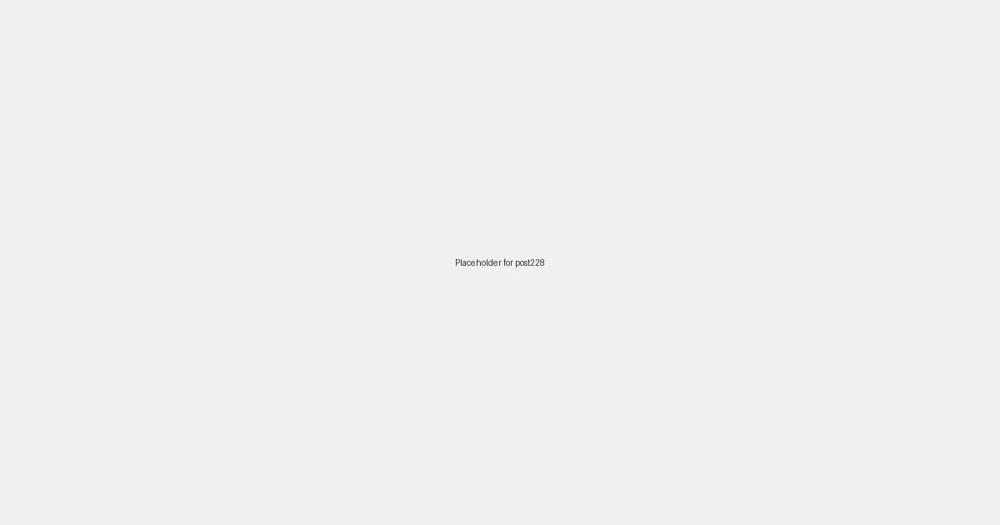

Local SEO for Art Galleries: Showcasing Local Talent in Digital Search in 2026

In the vibrant world of art, local galleries serve as crucial hubs for discovery, appreciation, and community engagement. Yet, despite their cultural significance, many struggle to connect with a broader local audience in the digital age. In 2026, leveraging local SEO isn't just about driving foot traffic; it's about amplifying the voices of local artists, making art accessible, and ensuring your gallery stands out in a crowded online landscape.
Why Local SEO is a Masterpiece for Art Galleries
For art galleries, local SEO offers a unique palette of benefits:
- Targeted Audience: Attracts art lovers, collectors, and curious visitors within your immediate geographic area who are actively searching for local art experiences.
- Community Connection: Strengthens your gallery's role as a local cultural institution, fostering relationships with patrons, artists, and other local businesses.
- Event Promotion: Boosts attendance for exhibition openings, artist talks, workshops, and other gallery events.
- Artist Visibility: Increases exposure for local artists, connecting them with new audiences and potential buyers.
Essential Local SEO Strokes for Art Galleries in 2026
1. Curate Your Google Business Profile (GBP)
Your Google Business Profile is the primary canvas for your gallery's local online presence:
- Precise Business Information: Ensure your gallery's name, address, phone number, and website are accurate and consistent.
- Rich Media & Virtual Tours: Upload high-quality photos of your gallery space, current exhibitions, and featured artworks. Consider a virtual tour to invite online visitors.
- Category Optimization: Use relevant primary and secondary categories like "Art Gallery," "Museum," "Art Consultant," etc.
- Posts for Exhibitions: Utilize GBP Posts to announce new exhibitions, featured artists, special events, and opening hours.
2. Develop Location-Specific Content
Create content that resonates with your local art scene and potential visitors:
- Artist Spotlights: Feature profiles of local artists whose work is displayed in your gallery, detailing their connection to the community.
- Exhibition Reviews: Write blog posts or articles about current exhibitions, using local keywords (e.g., "Contemporary Art Exhibit [City Name]").
- "Art Walks" or "Gallery Hopping" Guides: Position your gallery as part of a larger local art experience, mentioning other nearby cultural attractions.
- Local Art Scene History: Share content about the history of art and artists in your city or neighborhood.
3. Optimize for Local Keywords
Think like a local art enthusiast. What would they search for?
- "Art galleries near me"
- "Local artists [City/Neighborhood Name]"
- "Fine art for sale [City Name]"
- "Upcoming art exhibitions [City Name]"
- "Photography galleries [City Name]"
Integrate these keywords naturally into your website copy, blog posts, and meta descriptions.
4. Build Local Citations and Backlinks
Expand your gallery's digital footprint by securing mentions and links from local sources:
- Local Directories: List your gallery on local business directories, tourism sites, and cultural guides.
- Local Media Coverage: Engage with local newspapers, art blogs, and community publications for exhibition announcements or artist features.
- Partnerships: Collaborate with local businesses (e.g., cafes, boutiques, framing shops) for cross-promotional opportunities and backlinks.
- Event Listings: Submit all your events to local event calendars and cultural websites.
5. Encourage Reviews and Engagement
Online reviews are powerful social proof and contribute to your local SEO ranking:
- Solicit Reviews: Politely ask visitors and collectors to leave reviews on your GBP, Yelp, or other relevant platforms.
- Respond Thoughtfully: Engage with all reviews, positive or negative, to show you value feedback and are an active part of the community.
- Showcase Testimonials: Display positive testimonials on your website and social media channels.
By carefully applying these local SEO techniques, art galleries can ensure their digital presence reflects the beauty and significance of their physical space. In 2026, a well-optimized online strategy will help your gallery attract new admirers, support local artists, and solidify its place as a cherished cultural cornerstone in your community.